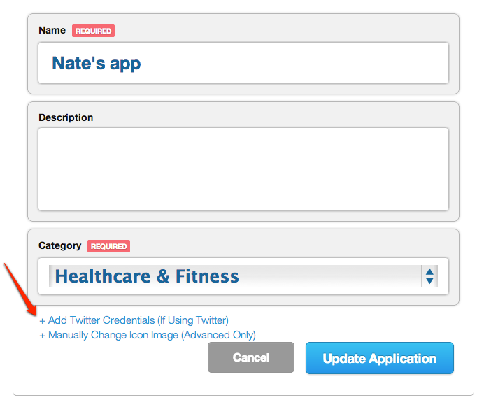

Twitter Integration¶
Introduction¶
It is strongly recommended that users be able to authenticate with Twitter when using Socialize so as to maximize the exposure and promotion of your app.
This provides significant benefits to both your application and your users, including:
- Improved user experience through personalized comments
- Automatic profile creation (user name and profile picture)
- Ability to automatically post user comments and likes to Twitter
- Promotes your app on Twitter by associating your app with a users’ tweets
To add Twitter authentication, you’ll need a Twitter Application and the consumer key/consumer secret for the Twitter app. If you already have a Twitter app, you can skip this section.
Creating a Twitter Application¶
If you do not already have a Twitter app just follow these simple steps:
- First create a Twitter app. Go to https://dev.twitter.com/ and create a new app:

- When creating the app, make sure you specify a callback URL. This can be any value, and is not actually called during authentication but Twitter requires a valid URL for callback otherwise authentication will fail.
Note
Make sure you specify a callback URL

- Change the permissions on the app to Read/Write
The default permissions for new Twitter Apps is Read Only, this must be changed to Read/Write.
Your Twitter Consumer Key and Consumer Secret is also displayed on this page

These settings can be altered from the Settings tab on your Twitter App page

Updating your Socialize Application Settings (Web)¶
You must enter your Twitter consumer key and secret in the “App Settings” of your Socialize App Intelligence Dashboard at getsocialize.com
This is a required step. For background info, see the blog post at http://blog.getsocialize.com/2012/twitter-update

Configuring Twitter in Socialize (SDK)¶
Once you have a twitter application, simply tell Socialize about your consumer key and secret:
#pragma mark
- (BOOL)application:(UIApplication*)application didFinishLaunchingWithOptions:(NSDictionary*)launchOptions {
// set the socialize api key and secret, register your app here: http://www.getsocialize.com/apps/
[Socialize storeConsumerKey:@"SOCIALIZE_CONSUMER_KEY"];
[Socialize storeConsumerSecret:@"SOCIALIZE_CONSUMER_SECRET"];
[SZTwitterUtils setConsumerKey:@"YOUR_TWITTER_CONSUMER_KEY" consumerSecret:@"YOUR_TWITTER_CONSUMER_SECRET"];
//your application specific code
return YES;
}
Note
Standard Twitter configuration complete. Keep reading for special configuration
Linking to Twitter Using Existing Credentials¶
If you already have a Twitter access token of your own, you can link to Socialize like so:
Note
You only need to do this if you implement your own twitter link flow. If you just want to use Socialize’s automatic twitter login, you should not perform this step.
- (void)linkToTwitter {
[SZTwitterUtils setConsumerKey:@"MYAPPCONSUMERKEY" consumerSecret:@"MYAPPCONSUMERSECRET"];
NSString *existingAccessToken = @"PREAUTHEDACCESSTOKEN";
NSString *existingSecret = @"PREAUTHEDACCESSTOKENSECRET";
[SZTwitterUtils linkWithAccessToken:existingAccessToken accessTokenSecret:existingSecret success:^(id<SocializeFullUser> user) {
NSLog(@"Link Complete");
} failure:^(NSError *error) {
NSLog(@"Link failure: %@", [error localizedDescription]);
}];
}
Posting to Twitter on your own¶
Should you need to post to Twitter on your own, you can do so by using the direct Twitter access methods on the utils classes. A viewcontroller must be specified so that Socialize can prompt the user for twitter authentication if needed. You can also preemptively authorize with twitter by calling the link methods directly.
- (void)postToTwitter {
NSString *text = @"The Status";
NSMutableDictionary *params = [NSMutableDictionary dictionaryWithObject:text forKey:@"status"];
[SZTwitterUtils postWithViewController:self path:@"/1.1/statuses/update.json" params:params success:^(id result) {
NSLog(@"Posted to Twitter feed: %@", result);
} failure:^(NSError *error) {
NSLog(@"Failed to post to Twitter feed: %@ / %@", [error localizedDescription], [error userInfo]);
}];
}
Posting to twitter with media requires that you use an update_with_media endpoint.
- (void)statusWithMedia {
UIImage *image = [UIImage imageNamed:@"Smiley.png"];
NSData *imageData = UIImagePNGRepresentation(image);
NSDictionary *params = @{
@"status": @"Hello",
@"media[]": imageData
};
[SZTwitterUtils postWithViewController:self path:@"1.1/statuses/update_with_media.json" params:params multipart:YES success:^(id result) {
NSLog(@"Posted %@", result);
} failure:^(NSError *error) {
NSLog(@"Failed %@", [error localizedDescription]);
}];
}
Troubleshooting¶
There are a couple of app settings that may cause issues. You can configure your app’s settings at http://dev.twitter.com
- For token errors during login, please ensure the app has a callback url defined in its settings.
- If posts are not showing up in your feed, you should verify that application is set read-write in its settings.